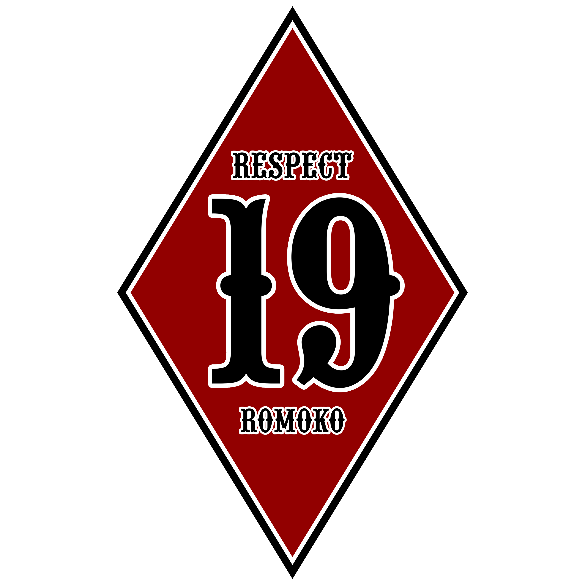

VISI
MISI
Pada tanggal 30 Oktober 2022, Romoko Bandung secara resmi mengadakan sebuah acara Anniversary ke 3 Tahun yang bertempatan di Puncak Eurad Lembang,Bandung,yang di hadiri oleh 94 club/komnitas yang mensupport dan menaikan logo pada banner acara tersebut,termasuk dari chapter Romoko Garut.Acara ini di hadiri kurang lebih dari 700 orang dari club/komunitas dari seluruh indonesia. dan di hadiri juga oleh club motor besar di bandung yaitu Bikers Brotherhood MC Bandung.
PRESS RELEASE | INFOVISI
Naungan perkumpulan yang diawali dengan hobi terhadap Motor Tua (Classic) yang diharapkan dapat dirawat dengan sukacita, agar dapat meneruskan kenangan baik.
MISI
Misi : Menyatukan hobi atau kesenangan terhadap Motor
Tua yang berprinsip pada kesetiaan dalam bentuk keluarga
tanpa memandang suku, ras, agama maupun perbedaan lainnya.
• Saling merespon ketika ada pertanyaan dari anggota lain.
• Memberikan informasi yang bermanfaat untuk perkembangan komunitas ini.
• Setiap postingan menggunakan bahasa yang baik dan sopan.
• Dilarang menghina anggota lain dalam bentuk apapun.
• Hindari postingan yang menimbulkan rasa tidak nyaman anggota lain.
• Terus berkarya dan manfaatkan teman komunitas untuk kemajuan bersama.
• Panjang umur tali silaturahmi.

ROMOKO CHAPTER GARUT